Pune Scapes!
Pune's Location
Geographical Position:
- Pune is situated in the western part of India, specifically in the state of Maharashtra.
- It lies in the Deccan Plateau region, which is a large plateau that covers much of central and
southern India.
- Pune is positioned towards the eastern edge of the plateau.
.jpg)
Relative Location:
- Pune is located approximately 118 kilometers (73 miles) southeast of Mumbai, the capital city of
Maharashtra.
- Mumbai serves as a major economic and cultural center, and its proximity to Pune has significant
implications for transportation, commerce, and connectivity.
.jpg)
Surrounding Regions:
- Pune is surrounded by various geographical features and regions.
- To the west, the Sahyadri mountain range, also known as the Western Ghats, forms a natural barrier.
- These mountains are known for their biodiversity and serve as a source of rivers and waterfalls.
- To the east of Pune, the Deccan Plateau extends across much of the Indian subcontinent,
characterized
by its flat and rocky terrain.
River Confluence:
- Pune is located at the confluence of the Mula and Mutha rivers, which merge to form the Mula-Mutha
River.
- These rivers play a crucial role in the city's water supply, irrigation, and transportation.
- The Mula-Mutha River eventually joins the Bhima River, a major tributary of the Krishna River.
Latitude and Longitude:
- The precise geographic coordinates of Pune are approximately 18.5204° N latitude and 73.8567° E
longitude.
- These coordinates mark Pune's position on the Earth's surface relative to the equator (latitude) and
the
Prime Meridian (longitude).
Altitude:
- Pune sits at an elevation of approximately 560 meters (1,840 feet) above sea level.
- While not particularly high compared to mountainous regions, Pune's altitude contributes to its
relatively temperate climate and distinguishes it from coastal areas.
Pune's Coordinates
Latitude:
- Pune is situated at approximately 18.5204° N latitude.
- Latitude measures how far north or south a location is from the equator, which is the imaginary line
that circles the Earth halfway between the North and South Poles.
- In the case of Pune, its latitude indicates that it is located in the northern hemisphere, roughly
18.5
degrees north of the equator.
- The city's position in the northern hemisphere means that it experiences seasons opposite to those
in
the southern hemisphere.
- Pune's summers typically occur from March to June, while winters are from November to February.
Longitude:
- Pune is positioned at around 73.8567° E longitude.
- Longitude measures how far east or west a location is from the Prime Meridian, an imaginary line
that
runs from the North Pole to the South Pole and passes through Greenwich, England.
- Pune's longitude indicates that it is situated east of the Prime Meridian, approximately 73.9
degrees
east.
- As Pune is located to the east of the Prime Meridian, it is ahead of Coordinated Universal Time
(UTC) by
several hours. India Standard Time (IST), which Pune follows, is UTC+5:30, meaning Pune is 5 hours
and
30 minutes ahead of UTC.
Pune's Altitude
- The altitude of Pune, India, is approximately 560 meters (1,840 feet) above sea level.
- Altitude refers to the height of a location above sea level, which is the average level of the
Earth's
oceans.
- Pune's altitude indicates how high above sea level the city is situated.
Moderate Elevation:
- Pune is situated at a moderate elevation compared to other cities and regions.
- While not as high as mountainous areas, its altitude still has significant effects on factors such
as
climate, temperature, and atmospheric pressure.
Impact on Climate:
- Pune's altitude contributes to its relatively moderate climate.
- The city experiences a tropical wet and dry climate, characterized by distinct wet and dry seasons.
- The elevation helps mitigate
extreme temperatures, resulting in milder summers and winters compared to low-lying coastal areas.
Temperature Variations:
- Altitude influences temperature variations within Pune.
- Generally, higher altitudes
experience cooler temperatures, while lower altitudes tend to be warmer.
- However, in Pune's case, the impact of
altitude on temperature is relatively moderate due to its elevation not being extremely high.
Topographical Features:
- The altitude of Pune affects its topographical features.
- Hills and plateaus surrounding
the city contribute to its diverse landscape, with varying elevations across different parts of Pune
and
its
outskirts.
Water Flow:
- Pune's altitude influences the flow of rivers and streams in the region.
- The city's higher elevation
compared to neighboring areas allows for gravitational water flow towards lower-lying regions,
affecting
drainage patterns and water management strategies.
Scenic Views:
- The altitude of Pune provides scenic viewpoints and vistas, especially from elevated areas such as
hills and viewpoints around the city.
- These vantage points offer panoramic views of Pune and its surroundings,
attracting tourists and nature enthusiasts.
Pune's Topography
Deccan Plateau:
- Pune is situated on the Deccan Plateau, a vast elevated region that covers much of central and
southern India.
- The Deccan Plateau is a large, flat, and rocky expanse that extends across Maharashtra, Karnataka,
Telangana, and Andhra Pradesh.
- Pune's location on this plateau contributes to its relatively dry climate and rugged terrain.
.jpg)
Western Ghats:
- To the west of Pune lies the Western Ghats, also known as the Sahyadri mountain range.
- These mountains form a natural barrier between the Deccan Plateau and the coastal regions of
western India.
- The Western Ghats are characterized by lush forests, steep slopes, and numerous peaks. Pune's
proximity to the Western Ghats provides stunning natural landscapes and opportunities for outdoor
activities such as trekking and wildlife viewing.
.jpg)
Hills:
- Pune is surrounded by several hills and hillocks, which add to its scenic beauty and recreational
opportunities.
- Sinhagad: Sinhagad, also known as Sinhgad, is a historic fortress located southwest of Pune. It
stands at an elevation of approximately 1,312 meters (4,304 feet) above sea level and offers
panoramic views of the surrounding countryside.
- Parvati Hill: Parvati Hill is a hillock located in the southern part of Pune. It is known for the
Parvati Temple situated atop the hill, which attracts devotees and tourists alike. Parvati Hill
provides a vantage point to enjoy views of Pune city.
- Vetal Hill: Vetal Hill, also known as Vetal Tekdi, is one of the highest hills within Pune city
limits. It is a popular destination for hiking, jogging, and birdwatching, offering trails and
viewpoints.
Valleys:
- Pune is situated in the vicinity of several valleys, adding to its geographical diversity.
- Khadakwasla Valley: Khadakwasla Valley is located southwest of Pune and is known for the Khadakwasla
Dam, which forms Khadakwasla Lake. The valley is surrounded by hills and serves as a prominent
recreational area.
- Mula-Mutha Valley: The Mula-Mutha Valley encompasses the Mula and Mutha rivers, which converge in
Pune. The valley provides fertile land for agriculture and is home to urban settlements along the
riverbanks.
Rivers:
- Pune is crisscrossed by several rivers, which contribute to its water resources and add to the
city's natural beauty.
- The Mula, Mutha, Pavana, and Indrayani rivers are some of the major rivers flowing through Pune and
its outskirts.
- 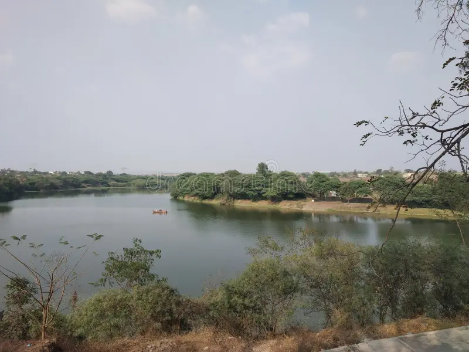
Urban Development:
- Despite its varied topography, Pune has witnessed extensive urban development, with residential,
commercial, and industrial areas expanding across the city and its outskirts.
- Urbanization has transformed Pune's landscape, leading to the development of infrastructure,
transportation networks, and amenities.
Pune's Climate
Classification:
- Pune experiences a tropical wet and dry climate according to the Köppen climate classification
system.
- This climate type is designated as Aw.
- It is characterized by distinct wet (monsoon) and dry seasons, with relatively high temperatures
throughout the year.
Seasonal Variation:
- Summer (March to June): Summers in Pune are hot and dry, with temperatures often exceeding 40°C
(104°F) during the peak months of April and May. The weather is generally sunny with clear skies.
Hot winds, known as loo, occasionally blow across the region, causing discomfort.
- Monsoon (June to September): Pune receives the majority of its annual rainfall during the monsoon
season. Heavy downpours occur, especially in July and August, due to the southwest monsoon winds
bringing moisture from the Arabian Sea. Rainfall is crucial for agriculture and replenishing water
reservoirs.
- Winter (November to February): Winters in Pune are mild and pleasant, with temperatures ranging from
10°C to 30°C (50°F to 86°F). December and January are the coldest months, but temperatures rarely
drop below 8°C (46°F). The weather is generally dry with occasional foggy mornings.
Temperature:
- Pune experiences relatively high temperatures throughout the year.
- The average annual temperature is around 25°C (77°F).
- During summers, daytime temperatures often soar above 35°C (95°F), while nights are cooler, with
temperatures ranging from 20°C to 25°C (68°F to 77°F).
- In winter, daytime temperatures range from 25°C to 30°C (77°F to 86°F), while nights can be cooler,
with temperatures dropping to 10°C (50°F) or slightly lower.
Rainfall:
- Pune receives the majority of its annual rainfall during the monsoon season, which lasts from June
to September.
- The average annual rainfall in Pune is approximately 722 millimeters (28.4 inches).
- July and August are typically the wettest months, with heavy rainfall contributing to flooding in
low-lying areas.
Humidity:
- Pune experiences high humidity levels during the monsoon season, often exceeding 70%.
- Humidity levels are relatively lower during the winter and summer months, ranging from 30% to 60%.
Climate Resilience:
- Pune's climate resilience measures include water management strategies to mitigate the impact of
floods and droughts.
- Urban planning initiatives focus on sustainable development practices to reduce the city's
vulnerability to climate change.
Impact on Agriculture:
- Pune's climate supports a variety of crops, including sugarcane, jowar (sorghum), bajra (pearl
millet), vegetables, and fruits.
- Adequate rainfall during the monsoon season is crucial for agricultural productivity in the region.
Pune's Vegetation
Dry Deciduous Forests:
- Historically, Pune and its surrounding areas were part of the Deccan Plateau's dry deciduous
forests.
- These forests typically consist of trees that shed their leaves during the dry season to conserve
water.
- However, extensive urbanization and agricultural activities have led to the depletion of natural
forests, with only fragments remaining in protected areas.
- 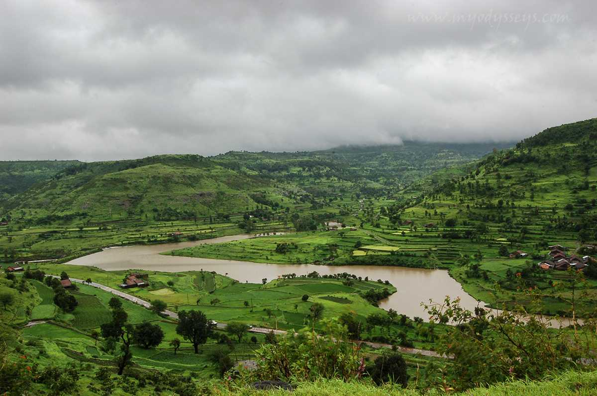
Scrublands:
- In many areas around Pune, especially in the drier regions, scrublands dominate the landscape.
- Scrub vegetation includes hardy shrubs, bushes, and grasses adapted to arid conditions.
- These areas are often characterized by thorny plants and are resilient in the face of water
scarcity.
Grasslands:
- The Deccan Plateau, on which Pune is located, has patches of grasslands.
- These grassy areas are crucial for maintaining soil health and supporting the local ecosystem.
- However, like other vegetation types, grasslands have been affected by human activities.
Urban Vegetation:
- Within the city of Pune, urbanization has led to the development of parks, gardens, and green
spaces.
- These areas contribute to urban biodiversity and serve as recreational spots.
- Trees commonly found in urban spaces include neem, gulmohar, peepal, banyan, and various species of
palms.
Agricultural Land:
- The outskirts of Pune are characterized by agricultural land, where farmers cultivate a variety of
crops.
- Common crops include sugarcane, jowar (sorghum), bajra (pearl millet), wheat, vegetables, and
fruits.
- Agriculture has significantly transformed the natural vegetation, leading to the expansion of
cultivated areas.
- 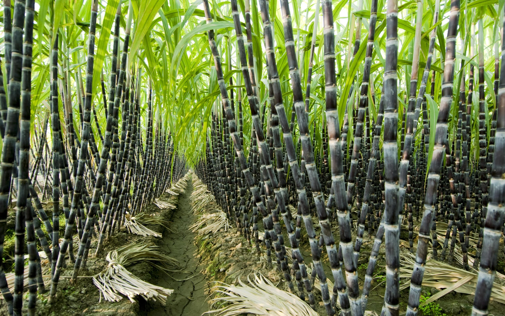
Riverside Vegetation:
- Along the banks of rivers such as the Mula and Mutha, you can find riparian vegetation.
- This type of vegetation is adapted to the specific conditions near water bodies, and it includes
trees, shrubs, and grasses that thrive in moist environments.
Hill and Mountain Flora:
- The hills and mountains surrounding Pune, especially in the Western Ghats, host a rich variety of
flora.
- These areas may contain evergreen forests, which retain their leaves throughout the year, as well as
unique plant species adapted to higher elevations.
- 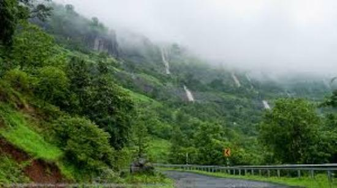
Conservation Areas:
- Pune and its surrounding regions have conservation areas and wildlife sanctuaries, such as
Bhimashankar Wildlife Sanctuary and Mayureshwar Wildlife Sanctuary.
- These areas aim to protect and preserve the region's natural biodiversity, including diverse plant
species.
.jpg)
Afforestation Efforts:
- Recognizing the importance of green cover, there have been afforestation and reforestation efforts
in and around Pune.
- Planting native trees and undertaking tree conservation initiatives help mitigate environmental
degradation.
Pune's Water Bodies
Mula River:
- The Mula River is one of the primary rivers flowing through Pune.
- It originates in the Sahyadri mountains and flows through Pune district, merging with the Mutha
River in the city.
- The Mula River serves as a major water source for irrigation, drinking water supply, and industrial
use.
- Additionally, it supports aquatic biodiversity and contributes to the region's ecological balance.
- 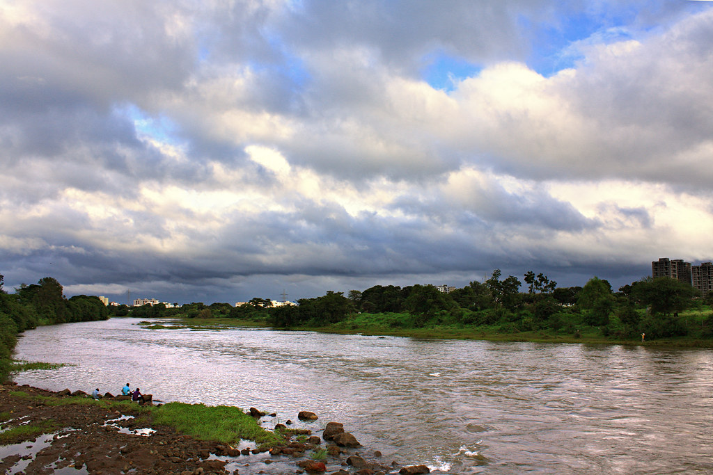
Mutha River:
- The Mutha River is another significant river in Pune, originating in the Western Ghats and flowing
through the city.
- It merges with the Mula River to form the Mula-Mutha River, which further joins the Bhima River.
- The Mutha River is essential for water supply, hydropower generation, and recreational activities
such as boating and riverside picnics.
.jpg)
Pavana River:
- The Pavana River is a tributary of the Bhima River and flows through Pune district.
- It originates in the Western Ghats and passes through areas such as Pavana Lake before joining the
Mula River near Pune city.
- The Pavana River and its associated reservoirs provide water for irrigation, drinking water supply,
and hydroelectric power generation.
- 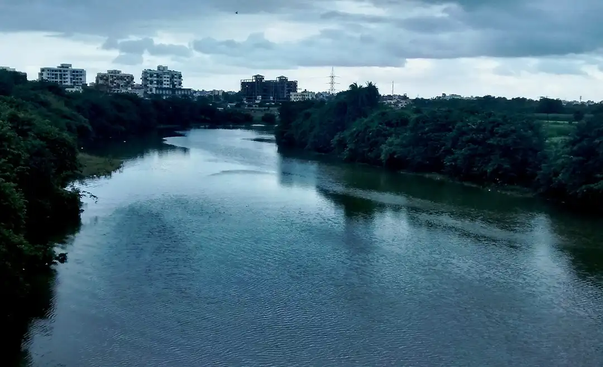
Khadakwasla Lake:
- Khadakwasla Lake is a reservoir located on the Mutha River, approximately 20 kilometers southwest of
Pune city.
- It was built in 1879 and serves as a major source of drinking water for Pune.
- Khadakwasla Dam, which forms the lake, also supports hydroelectric power generation and provides
recreational opportunities such as boating and fishing.
- 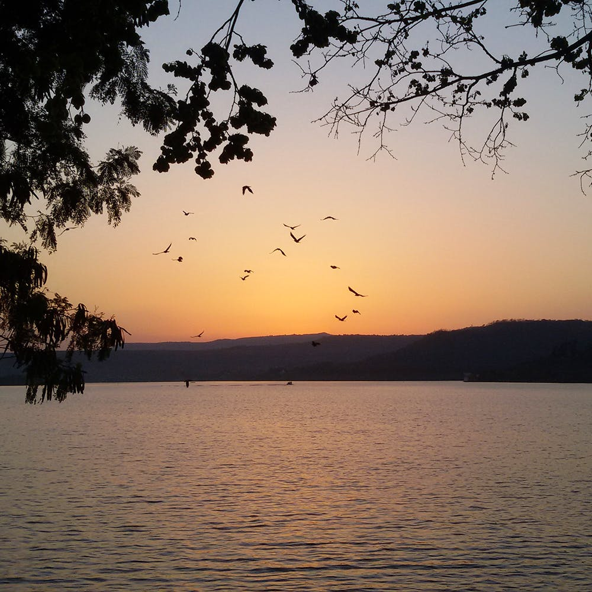
Pashan Lake:
- Pashan Lake is a natural lake located in the western part of Pune city.
- It is surrounded by hills and serves as a habitat for various bird species, making it a popular
destination for birdwatching and nature enthusiasts.
- Pashan Lake also helps recharge groundwater and contributes to the city's ecological diversity.
- 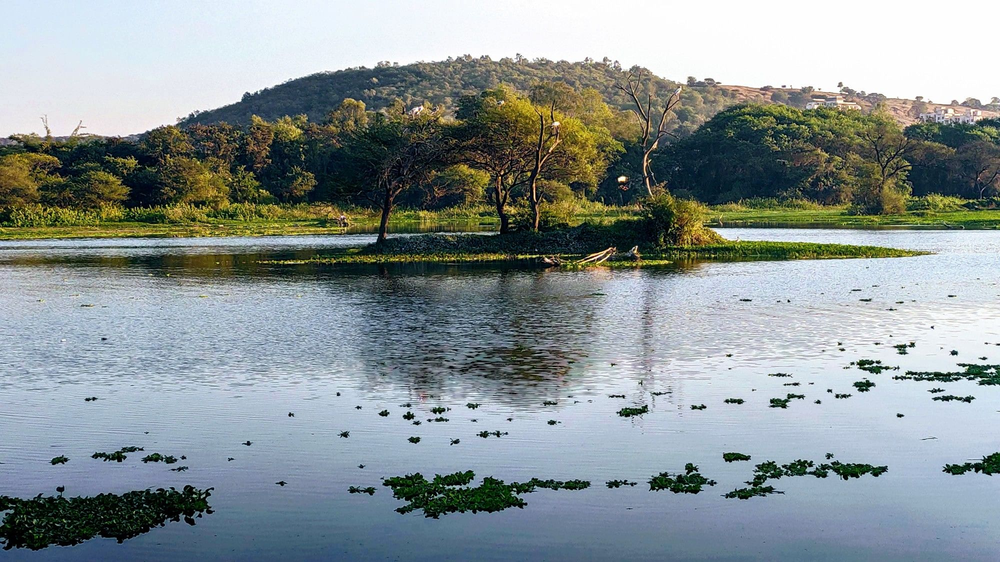
Ramnadi River:
- The Ramnadi River is a seasonal stream that flows through Pune city and its outskirts.
- It originates in the hills near Bavdhan and Baner and joins the Mula River downstream.
- The Ramnadi River is prone to flooding during the monsoon season, impacting low-lying areas along
its banks.

Dams and Reservoirs:
- In addition to Khadakwasla Dam, Pune district is home to several other dams and reservoirs,
including Temghar Dam, Varasgaon Dam, and Mulshi Dam.
- These dams serve multiple purposes, such as water storage, irrigation, hydropower generation, and
flood control.
- 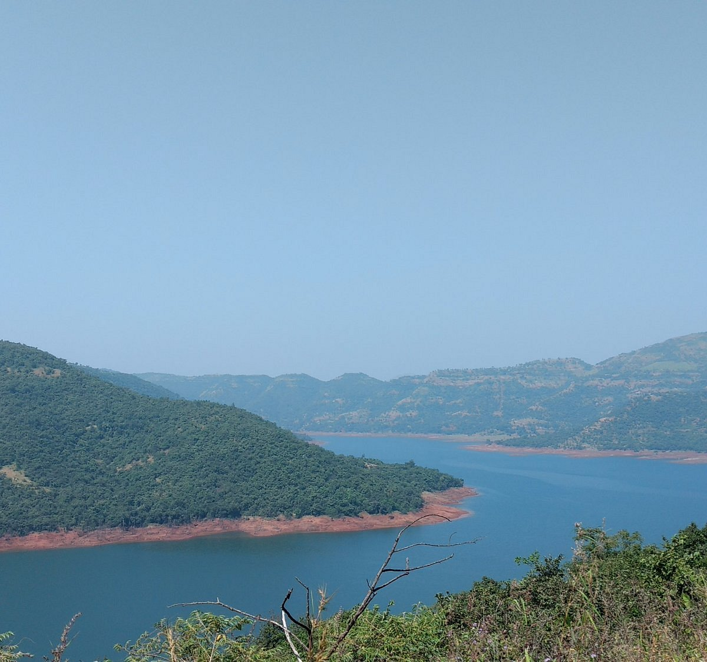
Pune's Urbanization
Population Growth:
- Pune has experienced rapid population growth due to factors such as industrialization, job
opportunities, and educational institutions.
- The city's population has increased steadily, leading to expansion and densification of urban areas.
- 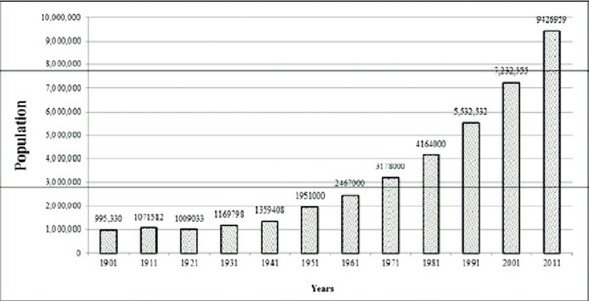
Infrastructure Development:
- Urbanization has spurred the development of infrastructure in Pune.
- This includes the construction of roads, highways, bridges, flyovers, and public transportation
systems to accommodate the growing population and improve connectivity within the city and its
outskirts.
- 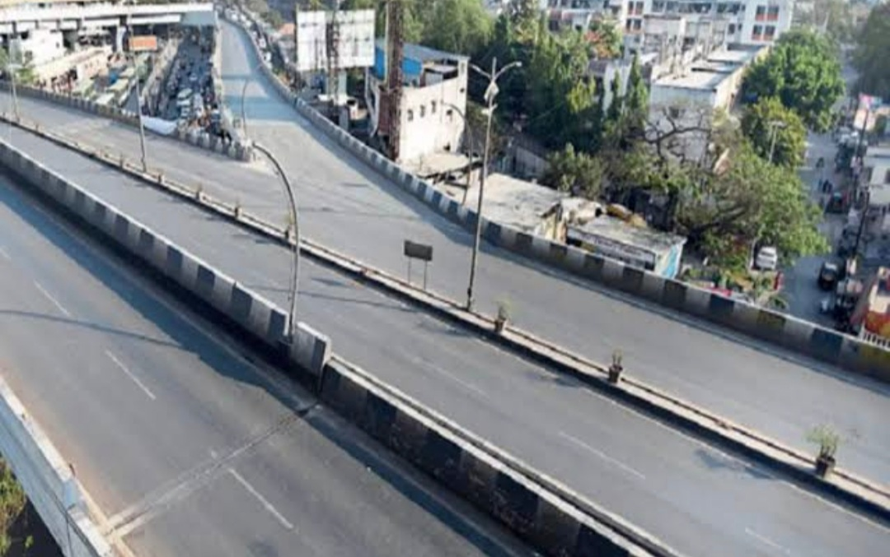
Residential Areas:
- Pune has witnessed the emergence of numerous residential neighborhoods, townships, and housing
complexes to accommodate the rising demand for housing.
- These developments range from high-rise apartment buildings to gated communities and suburban
housing projects.
- 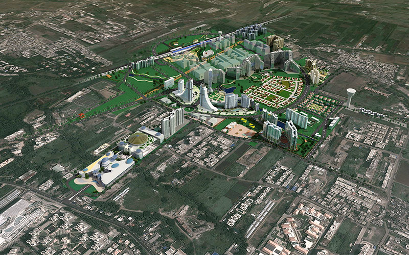
Commercial Hubs:
- Pune has become a thriving commercial hub, attracting businesses from various sectors such as
information technology, manufacturing, automotive, and services
- Commercial districts like Hinjewadi, Magarpatta, Kharadi, and Hadapsar house multinational
corporations, IT parks, industrial estates, and shopping malls.
- 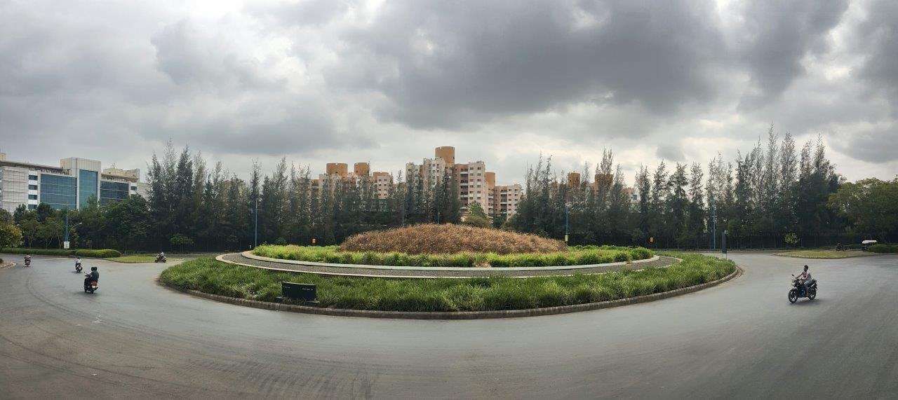
IT and Software Industry:
- Pune is renowned as one of India's prominent IT and software hubs, alongside cities like Bangalore
and Hyderabad.
- The establishment of Rajiv Gandhi Infotech Park in Hinjewadi has catalyzed Pune's growth as an IT
destination, attracting major IT companies, startups, and tech talent.

Educational Institutions:
- Pune is home to numerous educational institutions, including universities, colleges, and research
centers.
- Institutions like Savitribai Phule Pune University, Symbiosis International University, and the
Indian Institute of Science Education and Research (IISER) Pune have contributed to the city's
reputation as an educational hub.
- 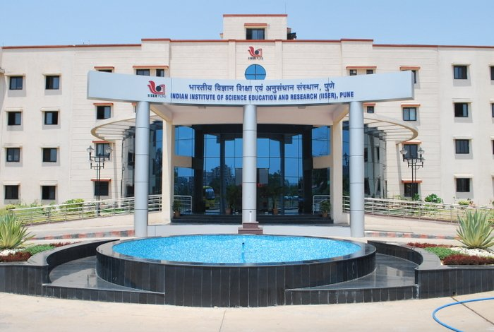
Industrialization:
- Pune has a strong industrial base, with sectors such as automotive manufacturing, engineering,
pharmaceuticals, and biotechnology driving economic growth.
- Industrial zones and special economic zones (SEZs) have been developed to promote industrialization
and attract investments.

Environmental Impact:
- Urbanization has led to environmental challenges such as air and water pollution, loss of green
spaces, and increased traffic congestion.
- Efforts are underway to address these issues through initiatives like sustainable urban planning,
waste management, and green initiatives.
.jpg)
Pune's Transporation
Roadways:
- Road Network: Pune has a well-developed road network, comprising national highways, state highways,
and arterial roads. The Mumbai-Pune Expressway, part of National Highway 48, connects Pune with
Mumbai and is one of India's busiest expressways.
- Local Roads: Within the city, roads range from wide multi-lane highways to narrow lanes in older
parts of the city. Ring roads like Pune Ring Road and Pune Outer Ring Road facilitate smoother
traffic flow around the city.
- Public Transport: Public buses operated by the Pune Mahanagar Parivahan Mahamandal Limited (PMPML)
are a popular mode of transportation for commuting within Pune and its suburbs. The PMPML operates a
fleet of buses covering various routes across the city.
- Auto Rickshaws and Taxis: Auto rickshaws and taxis are commonly used for short-distance travel
within Pune. They provide flexible and convenient transportation options, especially for areas not
serviced by buses.
Railways:
- Pune Railway Station: Pune Junction is one of the busiest railway stations in Maharashtra, serving
as a major transportation hub for passengers and freight. It is well-connected to various cities
across India through a network of railway lines.
- Suburban Rail Services: Pune Suburban Railway operates local train services connecting Pune with
nearby towns and suburbs such as Lonavala, Talegaon, and Daund. These services cater to daily
commuters traveling for work or education.

Airways:
- Pune Airport: Pune International Airport (Lohegaon Airport) serves domestic and international
flights, connecting Pune with major cities in India such as Mumbai, Delhi, Bangalore, and Hyderabad.
It also operates international flights to destinations in the Middle East and Southeast Asia.
- 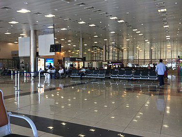
Public Transportation:
- Pune Metro: The Pune Metro rail project is under construction and is expected to enhance public
transportation in the city upon completion. The metro system will consist of multiple lines
connecting key areas of Pune and its suburbs.
- BRTS: The Pune Bus Rapid Transit System (BRTS) provides dedicated bus lanes along major corridors,
offering faster and more efficient transportation for commuters. The BRTS aims to reduce congestion
and improve the reliability of bus services.
- 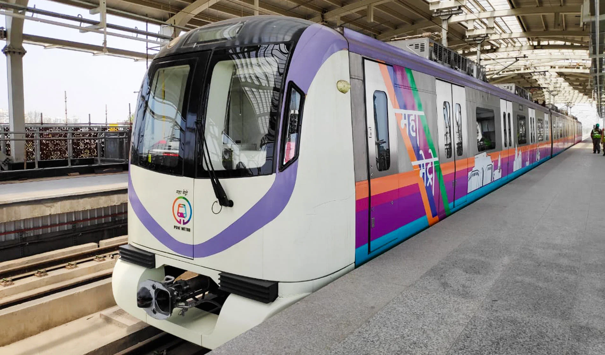
Cycling and Pedestrian Infrastructure:
- Pune has been promoting cycling as an eco-friendly mode of transportation.
- The city has introduced dedicated cycling lanes and rental services to encourage cycling among
residents.
- Efforts have also been made to improve pedestrian infrastructure with the development of sidewalks,
footpaths, and pedestrian-friendly zones in certain areas of Pune.
Transportation Challenges:
- Pune faces challenges such as traffic congestion, inadequate public transportation coverage, and
last-mile connectivity issues.
- Efforts are underway to address these challenges through infrastructure development, technology
integration, and policy initiatives.
- 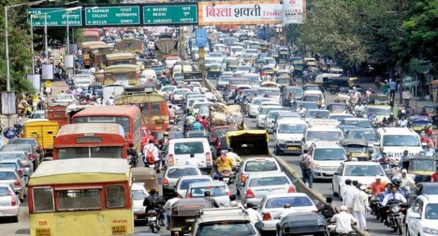
Pune's Natural hazards
Flooding:
- During the monsoon season, heavy rainfall can lead to flooding in low-lying areas of Pune,
particularly along riverbanks and in poorly drained areas.
- Urbanization and improper stormwater drainage systems exacerbate the risk of flooding, causing
waterlogging and property damage.
- Flash floods can occur in hilly regions and urban areas with inadequate drainage infrastructure.

Urban Heat Island Effect:
- Rapid urbanization and expansion of concrete structures in Pune have led to the formation of urban
heat islands, where temperatures are higher than surrounding rural areas.
- Increased heat retention by buildings and pavements, reduced green cover, and heat-generating
activities contribute to elevated temperatures, especially during the summer months.
Air Pollution:
- Pune experiences high levels of air pollution, particularly during the winter months, due to
vehicular emissions, industrial activities, construction dust, and biomass burning.
- Poor air quality can have adverse health effects, including respiratory problems, cardiovascular
diseases, and exacerbation of existing conditions.

Earthquakes:
- Pune is located in a seismically active region, with the potential for earthquakes due to its
proximity to major fault lines such as the Koyna-Warna fault and the Deccan Trap faults.
- While Pune has not experienced significant earthquakes in recent history, the risk remains, and
preparedness measures are essential to mitigate potential impacts on infrastructure and communities.
Heatwaves:
- Pune experiences heatwaves during the summer months, with temperatures often soaring above 40°C
(104°F).
- Prolonged exposure to high temperatures can lead to heat-related illnesses, dehydration, and heat
stress, particularly among vulnerable populations such as the elderly and outdoor workers.
- 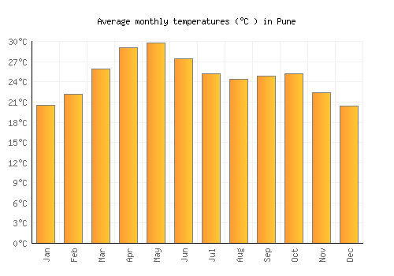
Drought:
- Despite its relatively wet climate during the monsoon season, Pune and its surrounding regions can
experience drought conditions during periods of inadequate rainfall.
- Droughts can have severe implications for agriculture, water supply, and socio-economic activities,
leading to crop failures, water shortages, and livelihood challenges.
- 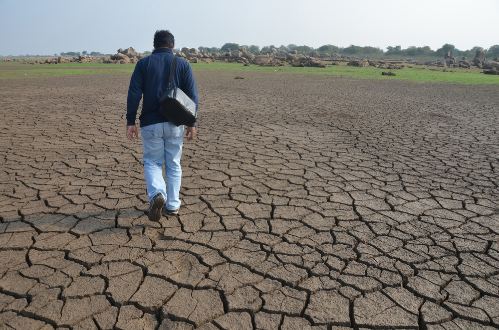
Landslides:
- Hilly areas surrounding Pune are susceptible to landslides, especially during the monsoon season
when heavy rainfall saturates the soil and destabilizes slopes.
- Deforestation, improper land use practices, and construction activities in landslide-prone areas
increase the risk of landslides and soil erosion.
.jpg)
Cyclones and Tropical Storms:
- While Pune is located inland, it can still experience the effects of cyclones and tropical storms
originating from the Arabian Sea or the Bay of Bengal, resulting in heavy rainfall, strong winds,
and associated hazards.